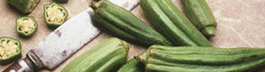

Ocras, Minimais und Frühlingszwiebeln
5,5 von 6ocras, minimais, und frühlingszwiebeln diagonal schneiden (suwi: falls du mal eine frau zum essen einlädst,
es sieht schöner aus). viel knoblauch und chillis fein schneiden und andämpfen. gemüse beigeben. auster-
sauce und etwas sojasauce rein. ca 2 min. braten.
